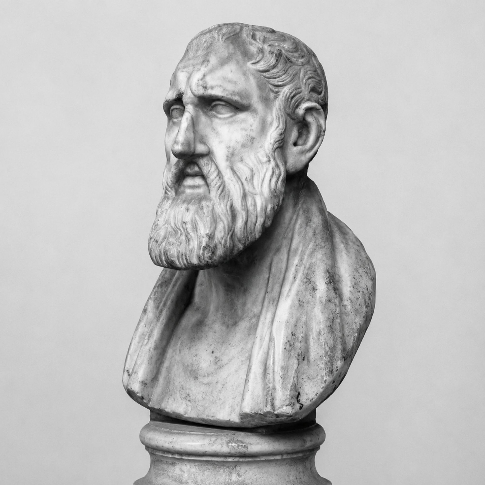

c. 334 a.C. – c. 262 a.C.
Zenão de Cítio
O fundador do Estoicismo
Zenão nasceu na cidade de Cítio, em Chipre, filho de um mercador fenício. Diz a tradição que ele chegou a Atenas depois de sobreviver a um naufrágio que destruiu seu carregamento de púrpura. Sem negócio para tocar, passou a frequentar livrarias e assistir às aulas dos filósofos da cidade, estudando primeiro com os cínicos e depois com pensadores acadêmicos e megáricos.
Por volta de 300 a.C., Zenão passou a ensinar por conta própria num pórtico público de Atenas decorado com afrescos, conhecido como Stoa Pecile ("pórtico pintado"). Foi desse local que a escola recebeu o nome pelo qual ficou conhecida: Estoicismo. Diferente de outras escolas da época, que se reuniam em jardins ou ginásios privados, Zenão ensinava em um espaço aberto ao público.
Sua filosofia unia lógica, física e ética num único sistema coerente: para viver bem, é preciso compreender a ordem racional que governa o universo (o Logos) e viver de acordo com a natureza. A virtude — e não o prazer ou a riqueza — seria o único bem verdadeiro, e as perturbações emocionais surgiriam de julgamentos equivocados sobre o que realmente importa.
Zenão viveu de forma simples e disciplinada, e essa coerência entre discurso e conduta atraiu discípulos de toda a Grécia, incluindo Cleantes, que herdaria a direção da escola após sua morte.
Zenão costumava dizer que a razão do homem deveria seguir a razão que governa o cosmo — e que a verdadeira riqueza está em precisar de pouco. — resumo do ensinamento atribuído a Zenão de Cítio